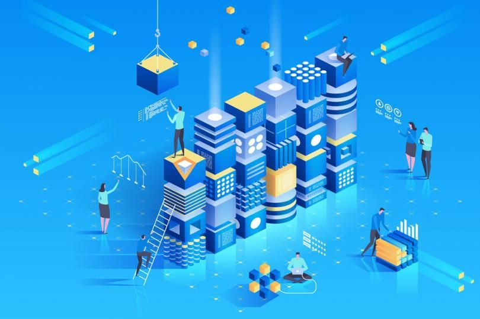

Belajar
Get in TouchPengertian Blockchain Techonology
Teknologi Blockchain paling sederhana didefinisikan sebagai distribusi buku besar yang terdesentralisasi yang mencata sumber aset digital. Dengan desain yang melekat, data pada Blokchain tidak dapat dimodifikasi, yang menjadikannya pengganggu yang sah untuk industri pembayaran, keamanan siber dan perawatan kesehatan. Panduan kami akan memandu anda melalui apa itu, bagaimana penggunaannya, dan sejarahnya

Apa Itu Teknologi Blockchain?
Blockchain sederhananya mendistribusikan secara sentral yang transparantBlockchain, terkadang merujuk ke sebuah Distributed Ledger Technology (DLT), membuat sejarah dari setiap asset digital yang tidak dapat diubah dan transparant melalui penggunaan desentralisasi dan hash kriptografi
Sebuah analogi sederhana untuk memahami teknologi Blockchain adalah sebuah Google Doc. Ketika kita membuat sebuah dokumen dan membagikannya dengan sekelompok orang, dokumen tersebut terdistribusikan alih-alih tersalin atau dikirimkan. Hal ini membuat rantai desentralisasi distribusi yang memberikan semua orang akses ke dokumen di waktu yang sama. Tidak ada yang terkunci menunggu perubahan dari orang lain, sementara semua modifikasi ke dokumen sudah terekam secara real-time, membuat setiap perubahan benar-benar tranparant
Tentu saja, Blokchain lebih rumit daripada Google Doc, tetapi analoginya sama karena mengilustrasikan ide kritis dari teknologi
PENJELASAN SINGKAT
Sebuah blockchain merupakan sebuah database yang memberikan block terenkripsi dari data kemudian mengaitkannya secara bersamaan untuk membentuk kronologi single-source-of-truth kepada data
Asset digital terdistribusi alih-alih tersalin atau terkirim, membuat sebuah rekaman yang tidak dapat dibuah dari sebuah asset
Asset sudah terdesentralisasi, memungkinkan akses real-time penuh dan transparant ke public
perubahan buku besar yang tranparant menjaga integritas dokumen, yang mana menciptakan kepercayaan terhadap asset
Langkah-langkah yang melekat pada blockchain dan buku besar public membuatnya teknologi utama untuk hampir setiap masing-masing sektor
Blockchain adalah terknologi yang sangat menjanjikan dan revolusioner karena membantu mengurangi risiko, memberantas penipuan, dan menghadirkan transparansi dengan cara yang terukur untuk berbagai penggunaan.